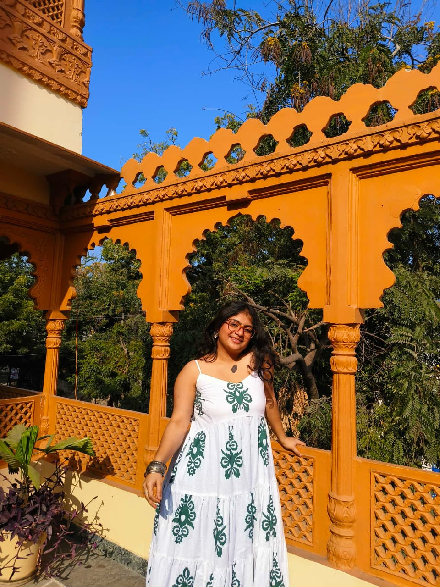

Komudi Rathore

B.Tech in Electronics and Communication Engineering Pandit Deendayal Energy University (PDEU)
Location: Vadodara, Gujarat
“Curious mind, clean code, and continuous learning — using technology responsibly to solve real problems.”
Introduction
I am a B.Tech student in Electronics and Communication Engineering at Pandit Deendayal Energy University with a strong academic record and a growing interest in cybersecurity, data analysis and software development.
My learning philosophy is based on curiosity, consistency and reflection. I enjoy exploring new technologies and understanding how systems work from both technical and ethical perspectives.
Education
Pandit Deendayal Energy University
B.Tech Electronics and Communication Engineering
2023 – Present
CGPA: 8.85 / 10
Navrachana Higher Secondary School
CBSE Class 12: 92.8%
CBSE Class 10: 96.1%
Projects
Password Strength Checker
A cybersecurity project evaluating password strength and detecting weak patterns.
Morse Code Encoder & Decoder
Python CLI tool converting text to Morse code and decoding Morse messages.
Pharmacy Management System
Web application using PHP and MySQL for medicine and order management.
Technical Skills
Future Aspirations
My goal is to become a skilled Electronics and Communication Engineer working on secure and scalable systems.
I aim to deepen my knowledge of networking, operating systems and cybersecurity while continuing to build real world projects.
Contact
Email: komudirathore@gmail.com
Phone: +91 XXXXX XXXXX
LinkedIn: linkedin.com
GitHub: github.com